The one-minute answerAng sagot sa isang minutoAng tubag sa usa ka minutoIng sagot king metung a minutu
This guide is about two B vitamins that behave very differently. Vitamin B1 (thiamine) is a spark plug your cells need to burn food for energy. If you vomit for days, can barely eat, have had weight-loss surgery, or receive dialysis, your body can run low, and one surprising sign is stubborn belly pain with nausea. It is treatable, often quickly. Niacin (vitamin B3) pills were once used to improve cholesterol numbers. Large studies showed that adding niacin to a statin (the usual cholesterol medicine) did not prevent heart attacks or strokes and caused more side effects, so it is no longer a routine add-on. If statins bothered you, other proven medicines exist.Tungkol ang gabay na ito sa dalawang B vitamin na magkaiba ang kilos. Ang Vitamin B1 (thiamine) ay parang spark plug na kailangan ng mga cell para gawing enerhiya ang pagkain. Kung ilang araw kang nagsusuka, halos hindi makakain, naoperahan para pumayat, o nagda-dialysis, puwedeng maubos ito, at isang nakakagulat na senyales ang matagal na sakit ng tiyan na may pagduduwal. Nagagamot ito, kadalasan nang mabilis. Ang niacin (vitamin B3) na tableta ay dating ginagamit para gumanda ang numero ng cholesterol. Ipinakita ng malalaking pag-aaral na ang pagdagdag ng niacin sa statin (ang karaniwang gamot sa cholesterol) ay hindi nakaiwas sa atake sa puso o stroke at nagdulot ng mas maraming side effect, kaya hindi na ito karaniwang idinadagdag. Kung hindi mo nakayanan ang statin, may iba pang napatunayang gamot.Mahitungod kini nga giya sa duha ka B vitamin nga lahi kaayo ang batasan. Ang Vitamin B1 (thiamine) sama sa spark plug nga gikinahanglan sa mga cell aron himoong enerhiya ang pagkaon. Kung pila ka adlaw ka nang nagsuka, halos dili makakaon, naoperahan aron mogamay, o nagpa-dialysis, mahimong mahurot kini, ug usa ka katingalahang timaan ang dugay nga sakit sa tiyan nga adunay kasukaon. Matambalan kini, kasagaran dali ra. Ang niacin (vitamin B3) nga tableta kaniadto gigamit aron mamaayo ang numero sa cholesterol. Gipakita sa dagkong mga pagtuon nga ang pagdugang og niacin sa statin (ang naandang tambal sa cholesterol) wala makapugong sa atake sa kasingkasing o stroke ug nagpadaghan sa side effect, busa dili na kini naandan nga idugang. Kung wala nimo maagwanta ang statin, aduna pay laing napamatud-ang tambal.Tungkul ining giya king adwang B vitamin a magkaiba ing ugali. Ing Vitamin B1 (thiamine) antimo yang spark plug a kailangan dareng cell ban gawan dang enerhiya ing pamangan. Nung pilan nang aldo kang mumulua, ali ka makapangan, mi-opera ka ban mamalate, o mag-dialysis ka, malyari yang maubus, at metung a makagulat a tanda ing matagal a sakit ning atyan a atin pamagmulua. Malyari yang panulunan, kalambang masikan. Ing niacin (vitamin B3) a tableta dati yang gagamitan ban sumanting ing numeru ning cholesterol. Pepakit dareng maragul a pag-aral a ing pamamandagdag niacin king statin (ing karaniwan a gamut king cholesterol) e ya mekapigil king atake king pusu o stroke at mikayabe yang dakal a side effect, anya e ne karaniwan idagdag. Nung e me kayanan ing statin, atin pang aliwa a apatunayan a gamut.
Get urgent care nowMagpatingin agad sa emergencyPagpatan-aw dayon sa emergencyMagpatingin ka agad king emergency
Go to the emergency room if you or your family member has confusion, new trouble walking or keeping balance, double vision or jerky eye movements, fainting, severe or worsening belly pain, a racing heart with breathlessness or leg swelling, or cannot keep any food or fluids down. Tell the team about dialysis, recent weight-loss surgery, weight-loss injections, or days of vomiting, because low vitamin B1 can cause brain and heart problems that need treatment within hours.Pumunta sa emergency room kung ikaw o ang kapamilya mo ay may pagkalito, bagong hirap sa paglakad o pagbalanse, doble ang paningin o paggalaw-galaw ng mata, pagkahimatay, matindi o lumalalang sakit ng tiyan, mabilis na tibok ng puso na may hingal o pamamaga ng binti, o hindi makapagpanatili ng pagkain o inumin. Sabihin sa team kung nagda-dialysis, bagong naoperahan para pumayat, gumagamit ng weight-loss injection, o ilang araw nang nagsusuka, dahil ang kakulangan sa vitamin B1 ay puwedeng magdulot ng problema sa utak at puso na kailangang gamutin sa loob ng ilang oras.Adto sa emergency room kung ikaw o ang imong kapamilya adunay kalibog, bag-ong kalisod sa paglakaw o pagbalanse, doble nga panan-aw o pagkurog-kurog sa mata, pagkaluya o pagkawala sa panimuot, grabe o nagkagrabe nga sakit sa tiyan, paspas nga pitik sa kasingkasing nga adunay hangos o paghubag sa bitiis, o dili makapugong sa pagkaon o ilimnon. Ingna ang team kung nagpa-dialysis, bag-ong naoperahan aron mogamay, nagagamit og weight-loss injection, o pila ka adlaw nang nagsuka, kay ang kakulang sa vitamin B1 makahatag og problema sa utok ug kasingkasing nga kinahanglang tambalan sulod sa pipila ka oras.Munta ka king emergency room nung ika o ing kapamilya mu atin pamaglito, bayung kasakitan king paglakad o pamagbalanse, doble ing panulu o pamaggalo-galo ning mata, pamagkahimatay, malala o lalung malalang sakit ning atyan, masikan a pamitik ning pusu a atin pangisnawa o pamagbulkas ning bitis, o e makapagpanatili pamangan o inumin. Sabyan me ing team nung mag-dialysis ka, bayu kang mi-opera ban mamalate, gagamit weight-loss injection, o pilan nang aldo kang mumulua, uli ta ing kulang a vitamin B1 malyari yang manyabi problema king utak at pusu a kailangan panulunan king lub da ning pilan a oras.
Two B vitamins, two very different storiesDalawang B vitamin, dalawang magkaibang kuwentoDuha ka B vitamin, duha ka lahi kaayong istoryaAdwang B vitamin, adwang magkaibang kuwentu
Vitamins B1 and B3 sit side by side in a vitamin B-complex tablet, but in kidney care they raise opposite questions. With B1, the worry is having too little, quietly, when eating has gone badly. With B3, the question is whether taking large medicine doses helps the heart. It does not, for most people already on a statin.Magkatabi ang vitamin B1 at B3 sa isang B-complex na tableta, pero sa pangangalaga sa bato ay magkasalungat ang tanong nila. Sa B1, ang alalahanin ay ang kakulangan nang hindi napapansin, kapag hindi maayos ang pagkain. Sa B3, ang tanong ay kung nakakatulong ba sa puso ang pag-inom ng malalaking dosis na gamot. Hindi, para sa karamihan na umiinom na ng statin.Magtupad ang vitamin B1 ug B3 sa usa ka B-complex nga tableta, apan sa pag-atiman sa kidney magkasukwahi ang ilang pangutana. Sa B1, ang kabalaka mao ang kakulang nga dili mamatikdan, kung dili maayo ang pagkaon. Sa B3, ang pangutana kung makatabang ba sa kasingkasing ang pag-inom og dagkong dosis nga tambal. Dili, alang sa kadaghanan nga nag-inom na og statin.Magsiping ing vitamin B1 at B3 king metung a B-complex a tableta, oneng king pamag-alaga king batu magkasalungat ing kutang da. King B1, ing pamag-alala ing kakulangan a e apansinan, nung e masanting ing pamangan. King B3, ing kutang nung makatulung ya king pusu ing pamanainum maragul a dosis a gamut. Ali, para king karamihan a minum nang statin.
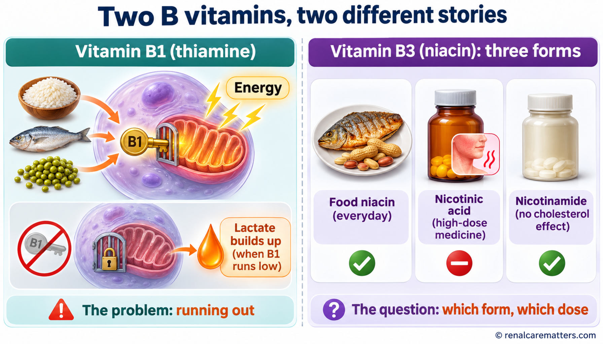
Left: vitamin B1 helps cells turn food into energy. Right: vitamin B3 comes in three forms that do different things, from food to high-dose medicine.Kaliwa: tinutulungan ng vitamin B1 ang mga cell na gawing enerhiya ang pagkain. Kanan: ang vitamin B3 ay may tatlong anyo na magkakaiba ang gawa, mula sa pagkain hanggang sa mataas na dosis na gamot.Wala: gitabangan sa vitamin B1 ang mga cell nga himoong enerhiya ang pagkaon. Tuo: ang vitamin B3 adunay tulo ka porma nga lahi-lahi ang buhat, gikan sa pagkaon hangtod sa taas nga dosis nga tambal.Kayli: tutulungan ning vitamin B1 dareng cell ban gawan dang enerhiya ing pamangan. Wanan: ing vitamin B3 atin yang atlung anyu a magkakaiba ing gawa, manibat king pamangan anggang king maragul a dosis a gamut.
When the body runs low on vitamin B1Kapag nauubusan ng vitamin B1 ang katawanKung mahurotan og vitamin B1 ang lawasNung maubusan vitamin B1 ing katawan
Your body stores only a small amount of vitamin B1, so the supply can run down within weeks when you eat very little or keep vomiting. Cells then struggle to finish burning sugar, and a waste product called lactate can build up in the blood. The nerves and muscles of the gut need a lot of energy, which may be why some people develop belly pain, nausea, vomiting, and loss of appetite before anything else. Doctors call this gastrointestinal beriberi. It is uncommon, easy to miss because the symptoms look like many other stomach problems, and very treatable.Kaunti lang ang naiimbak na vitamin B1 sa katawan, kaya puwede itong maubos sa loob ng ilang linggo kapag kaunti ang kain o tuloy-tuloy ang pagsusuka. Nahihirapan ang mga cell na tapusin ang pagsunog ng asukal, at puwedeng dumami sa dugo ang tinatawag na lactate. Malaki ang kailangang enerhiya ng mga nerve at muscle ng bituka, kaya siguro may ilang tao na unang nagkakaroon ng sakit ng tiyan, pagduduwal, pagsusuka, at kawalan ng gana. Tinatawag ito ng mga doktor na gastrointestinal beriberi. Hindi ito karaniwan, madaling hindi mapansin dahil kamukha ng ibang sakit sa tiyan, at madaling gamutin.Gamay ra ang natipigang vitamin B1 sa lawas, busa mahimong mahurot kini sulod sa pipila ka semana kung gamay ang kaon o padayon ang pagsuka. Maglisod ang mga cell sa pagtapos sa pagsunog sa asukal, ug mahimong motaas sa dugo ang gitawag nga lactate. Dako ang enerhiyang gikinahanglan sa mga nerve ug muscle sa tinai, mao tingali nga ang ubang tawo unang makabati og sakit sa tiyan, kasukaon, pagsuka, ug kawalay gana. Gitawag kini sa mga doktor nga gastrointestinal beriberi. Dili kini kasagaran, dali nga dili mamatikdan kay susama sa ubang sakit sa tiyan, ug dali ra tambalan.Kakaunti mu ing makatagong vitamin B1 king katawan, anya malyari yang maubus king lub da ning pilan a dominggu nung kakaunti ing pamangan o tuloy-tuloy ing pamagmulua. Mairapan la reng cell ban tapusan ing pamanulu king asukal, at malyaring dumakal king daya ing aus dang lactate. Maragul ing kailangan a enerhiya dareng nerve at muscle ning bituka, anya siguru atin taung mumuna lang makaramdam sakit ning atyan, pamagmulua-mulua, pamagmulua, at kawalan gana. Aus de ini dareng doktor a gastrointestinal beriberi. E ya karaniwan, malagwa ya e mapansinan uli ta kamukha ne ing aliwang sakit ning atyan, at malagwa yang panulunan.
Who is at higher risk?Sino ang mas nanganganib?Kinsa ang mas peligro?Ninu ing mas delikadu?
- People who vomit for days or eat very little for weeks, for any reason.Mga taong ilang araw nang nagsusuka o halos hindi kumakain nang ilang linggo, anuman ang dahilan.Mga tawo nga pila ka adlaw nang nagsuka o halos dili mokaon sulod sa pipila ka semana, bisan unsa ang hinungdan.Reng taung pilan nang aldo a mumulua o ali mangan king pilan a dominggu, nanu man ing sangkan.
- People on dialysis, especially with poor appetite: B1 dissolves in water and can be lost into the dialysis fluid.Mga nagda-dialysis, lalo na kung mahina ang gana: natutunaw sa tubig ang B1 at puwedeng mawala sa dialysis fluid.Mga nagpa-dialysis, labi na kung huyang ang gana: matunaw sa tubig ang B1 ug mahimong mawala sa dialysis fluid.Reng mag-dialysis, lalu na nung mayna ing gana: malusaw ya king danum ing B1 at malyari yang mawala king dialysis fluid.
- People who had weight-loss (bariatric) surgery or other stomach or bowel surgery.Mga naoperahan para pumayat (bariatric surgery) o iba pang operasyon sa sikmura o bituka.Mga naoperahan aron mogamay (bariatric surgery) o laing operasyon sa tiyan o tinai.Reng mi-opera ban mamalate (bariatric surgery) o aliwang opera king atyan o bituka.
- People starting or increasing weight-loss injections such as semaglutide or tirzepatide who develop persistent vomiting or can hardly eat.Mga nagsisimula o nagtataas ng weight-loss injection gaya ng semaglutide o tirzepatide na tuloy-tuloy ang pagsusuka o halos hindi makakain.Mga nagsugod o nagpataas og weight-loss injection sama sa semaglutide o tirzepatide nga padayon ang pagsuka o halos dili makakaon.Reng mumpisa o magpataas weight-loss injection antimo ing semaglutide o tirzepatide a tuloy-tuloy ing pamagmulua o ali makapangan.
- People who drink a lot of alcohol, or whose tube or vein feeding was interrupted.Mga taong malakas uminom ng alak, o naantala ang pagpapakain sa tubo o sa ugat.Mga tawo nga kusog moinom og alak, o naundang ang pagpakaon pinaagi sa tubo o ugat.Reng taung masikan uminum alak, o miantala ing pamamakan king tubo o king ugat.
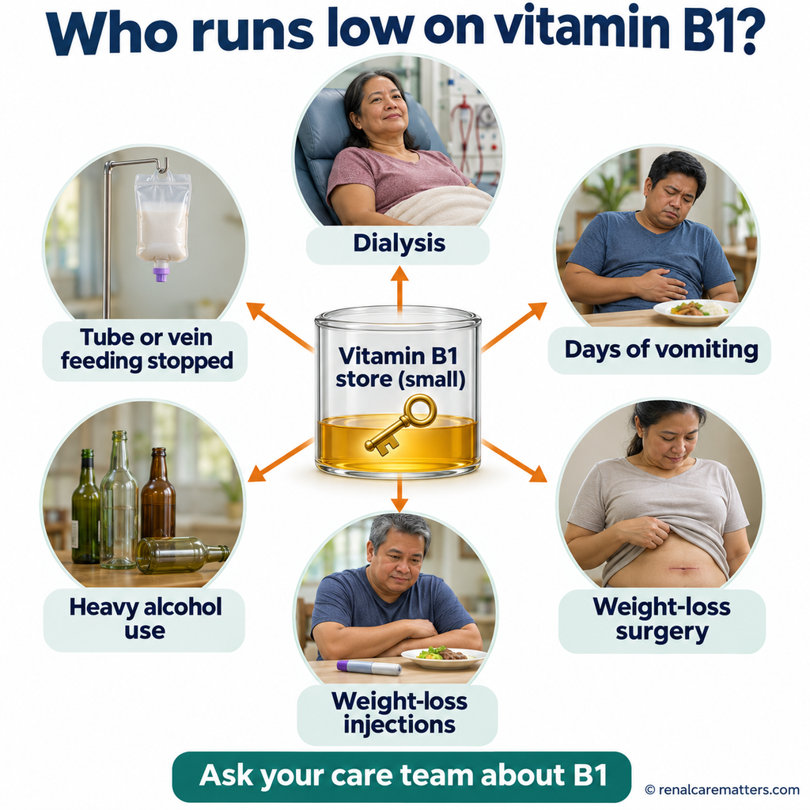
Six situations that drain the body's small vitamin B1 store. If one of these is you, ask your care team about B1.Anim na sitwasyon na umuubos sa maliit na imbak ng vitamin B1 sa katawan. Kung isa rito ang sitwasyon mo, tanungin ang iyong care team tungkol sa B1.Unom ka sitwasyon nga makahurot sa gamay nga tipig sa vitamin B1 sa lawas. Kung usa niini ang imong kahimtang, pangutan-a ang imong care team bahin sa B1.Anam a sitwasyun a mamaubus king kakaunting tagu a vitamin B1 ning katawan. Nung metung kareni ing kalagayan mu, kutang me ing care team mu tungkul king B1.
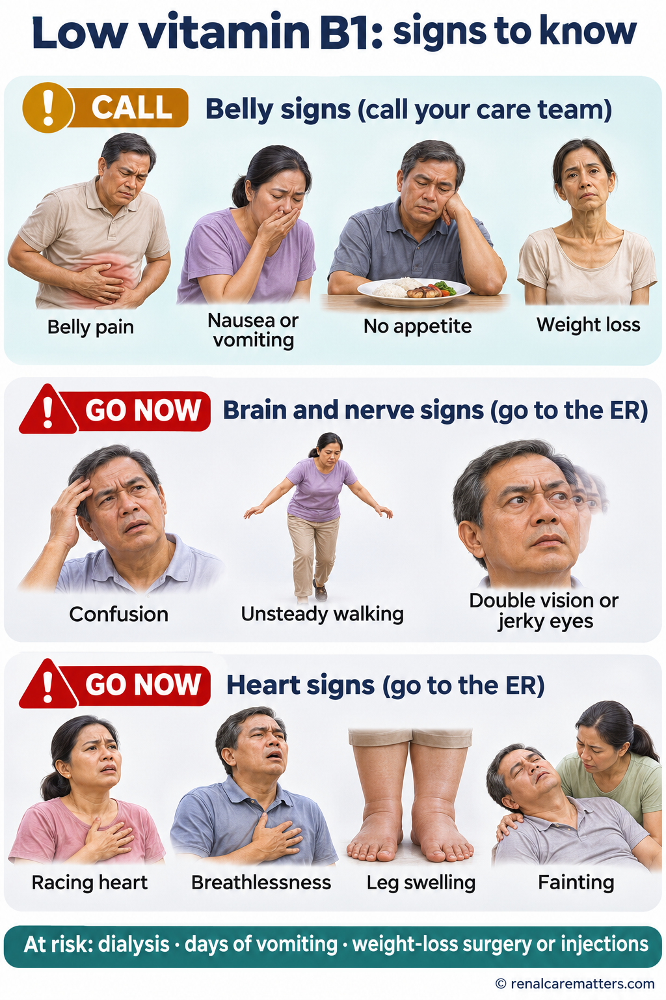
Low vitamin B1 can show up in the belly first. New confusion, unsteady walking, eye problems, fainting, or breathlessness need emergency care.Puwedeng sa tiyan unang lumitaw ang kakulangan sa vitamin B1. Ang bagong pagkalito, pagsuray sa paglakad, problema sa mata, pagkahimatay, o hingal ay kailangan ng emergency na pangangalaga.Mahimong sa tiyan unang motungha ang kakulang sa vitamin B1. Ang bag-ong kalibog, pagkiay-kiay sa paglakaw, problema sa mata, pagkaluya, o hangos nagkinahanglan og emergency nga pag-atiman.Malyaring king atyan mumuna lumwal ing kulang a vitamin B1. Ing bayung pamaglito, pamagsuray king paglakad, problema king mata, pamagkahimatay, o pangisnawa kailangan emergency a pamag-alaga.
What your care team may doAno ang maaaring gawin ng iyong care teamUnsay mahimong buhaton sa imong care teamNanu ing malyaring gawan ning care team mu
Ask and examineMagtanong at magsuriMangutana ug mosusiMangutang at manyuri
Questions about vomiting, eating, weight loss, surgery, alcohol, dialysis, and new medicines; a check of the eyes, balance, and heart.Mga tanong tungkol sa pagsusuka, pagkain, pagpayat, operasyon, alak, dialysis, at bagong gamot; pagsuri sa mata, balanse, at puso.Mga pangutana bahin sa pagsuka, pagkaon, pagniwang, operasyon, alak, dialysis, ug bag-ong tambal; pagsusi sa mata, balanse, ug kasingkasing.Kutang tungkul king pamagmulua, pamangan, pamamalate, opera, alak, dialysis, at bayung gamut; pamagsuri king mata, balanse, at pusu.
Take blood first, if possibleKumuha muna ng dugo, kung kayaPagkuha una og dugo, kung mahimoMangua muna daya, nung malyari
A blood vitamin B1 level and a lactate level, drawn before the first dose when this does not delay care.Pagsukat ng vitamin B1 at lactate sa dugo, kinukuha bago ang unang dosis kung hindi ito makakaantala sa gamutan.Pagsukod sa vitamin B1 ug lactate sa dugo, kuhaon sa dili pa ang unang dosis kung dili kini makapadugay sa pagtambal.Pamagsukad vitamin B1 at lactate king daya, kukuanan bayu ing mumunang dosis nung e ya makaantala king panulu.
Start B1 without waitingSimulan ang B1 nang hindi naghihintaySugdan ang B1 nga dili maghulatMumpisa B1 a e maglaus
The result can take days. When the story fits, treatment usually starts right away, often by vein (IV) at first.Puwedeng ilang araw bago lumabas ang resulta. Kapag tugma ang kuwento, kadalasang sinisimulan agad ang gamot, madalas sa ugat (IV) muna.Mahimong pila ka adlaw una mogawas ang resulta. Kung motugma ang istorya, kasagaran sugdan dayon ang tambal, kasagaran sa ugat (IV) una.Malyaring pilan a aldo bayu lumwal ing resulta. Nung tugma ing kuwentu, kalambang pimpisan agad ing gamut, kalambang king ugat (IV) muna.
Restart food carefullyIbalik nang maingat ang pagkainIbalik nga mainampingon ang pagkaonIbalik a maingat ing pamangan
When eating restarts after a long gap, potassium, phosphate, and magnesium can drop. The team checks them and times blood tests around dialysis.Kapag muling kumain pagkatapos ng mahabang pagitan, puwedeng bumaba ang potassium, phosphate, at magnesium. Sinusuri ito ng team at itinatapat ang blood test sa oras ng dialysis.Kung mokaon na usab human sa dugay nga pagitan, mahimong mous-os ang potassium, phosphate, ug magnesium. Susihon kini sa team ug itakda ang blood test sa oras sa dialysis.Nung mangan neng pasibayu kaibat ning mabayang pagitan, malyaring tuknang ing potassium, phosphate, at magnesium. Suriyan da reti ning team at itapat de ing blood test king oras ning dialysis.
Many people feel better within a day or two of treatment, and the lactate level often falls. That improvement is reassuring, but your doctors will still look for other causes of belly pain, because more than one problem can be present at the same time. Do not start high-dose vitamin pills on your own to prevent this; if you are at risk, ask your kidney team whether a kidney-friendly multivitamin or a B1 supplement is right for you.Maraming gumagaan ang pakiramdam sa loob ng isa o dalawang araw ng gamutan, at kadalasang bumababa ang lactate. Nakakapanatag ang pagbuti, pero hahanapin pa rin ng doktor ang ibang sanhi ng sakit ng tiyan, dahil puwedeng higit sa isa ang problema nang sabay. Huwag basta uminom ng mataas na dosis na bitamina para umiwas dito; kung nanganganib ka, tanungin ang iyong kidney team kung bagay sa iyo ang kidney-friendly na multivitamin o B1 supplement.Daghan ang mamaayo ang pamati sulod sa usa o duha ka adlaw sa pagtambal, ug kasagaran mous-os ang lactate. Makapahupay ang pag-ayo, apan pangitaon gihapon sa doktor ang ubang hinungdan sa sakit sa tiyan, kay mahimong labaw sa usa ang problema dungan. Ayaw lang pag-inom og taas nga dosis nga bitamina aron malikayan kini; kung peligro ka, pangutan-a ang imong kidney team kung haom ba nimo ang kidney-friendly nga multivitamin o B1 supplement.Dakal ing gumaan ing pakiramdam king lub da ning metung o adwang aldo ning panulu, at kalambang tuknang ing lactate. Makapanatag ing pamagsanting, oneng anapan da pa murin dareng doktor ing aliwang sangkan ning sakit ning atyan, uli ta malyaring mayigit king metung ing problema king misan a oras. E ka basta uminum maragul a dosis a bitamina ban iwasan ini; nung delikadu ka, kutang me ing kidney team mu nung bagay keka ing kidney-friendly a multivitamin o B1 supplement.
Niacin pills and cholesterol: better numbers, not fewer heart attacksNiacin na tableta at cholesterol: gumanda ang numero, pero hindi nabawasan ang atake sa pusoNiacin nga tableta ug cholesterol: nindot ang numero, apan wala makunhod ang atake sa kasingkasingNiacin a tableta at cholesterol: sinanting ing numeru, oneng e mekunan ing atake king pusu
The niacin in rice, fish, chicken, peanuts, and mushrooms is a normal part of a healthy diet. High-dose niacin medicine (nicotinic acid, usually 1,000 to 2,000 mg a day) is different: it lowers triglycerides and raises HDL (high-density lipoprotein, the "good" cholesterol). Two large trials tested it in people already taking a statin. In the bigger one, about 132 of every 1,000 people on niacin had a heart attack, stroke, or blocked-artery procedure, compared with about 137 of every 1,000 on a dummy pill: a difference small enough to be chance. Niacin also caused more problems with blood sugar control, new diabetes, stomach upset, muscle problems, infections, and bleeding.Bahagi ng malusog na pagkain ang niacin sa kanin, isda, manok, mani, at kabute. Iba ang mataas na dosis na niacin na gamot (nicotinic acid, karaniwang 1,000 hanggang 2,000 mg bawat araw): pinabababa nito ang triglyceride at pinatataas ang HDL (high-density lipoprotein, ang "mabuting" cholesterol). Sinubukan ito ng dalawang malaking trial sa mga umiinom na ng statin. Sa mas malaki, mga 132 sa bawat 1,000 na nag-niacin ang nagkaroon ng atake sa puso, stroke, o operasyon sa baradong ugat, kumpara sa mga 137 sa bawat 1,000 na nasa dummy na tableta: napakaliit na pagkakaiba na puwedeng nagkataon lang. Nagdulot din ang niacin ng mas maraming problema sa kontrol ng asukal, bagong diabetes, sakit ng sikmura, problema sa muscle, impeksyon, at pagdurugo.Bahin sa himsog nga pagkaon ang niacin sa kan-on, isda, manok, mani, ug uhong. Lahi ang taas nga dosis nga niacin nga tambal (nicotinic acid, kasagaran 1,000 ngadto sa 2,000 mg matag adlaw): gipaubos niini ang triglyceride ug gipataas ang HDL (high-density lipoprotein, ang "maayong" cholesterol). Gisulayan kini sa duha ka dakong trial sa mga nag-inom na og statin. Sa mas dako, mga 132 sa matag 1,000 nga nag-niacin ang naatake sa kasingkasing, na-stroke, o naoperahan sa nabarang ugat, itandi sa mga 137 sa matag 1,000 nga nag-dummy nga tableta: gamay kaayong kalainan nga mahimong sulagma lang. Nagpadaghan usab ang niacin sa problema sa kontrol sa asukal, bag-ong diabetes, sakit sa tiyan, problema sa muscle, impeksyon, ug pagdugo.Bahagi ning masalusung a pamangan ing niacin king nasi, asan, manuk, mani, at kabuti. Aliwa ing maragul a dosis a niacin a gamut (nicotinic acid, karaniwan 1,000 anggang 2,000 mg balang aldo): pababan na ing triglyceride at pataasan na ing HDL (high-density lipoprotein, ing "mayap" a cholesterol). Sinubukan de ini dareng adwang maragul a trial kareng minum nang statin. King mas maragul, malapit 132 king balang 1,000 a minum niacin ing atakan king pusu, stroke, o mi-opera king mibara a ugat, kumpara king malapit 137 king balang 1,000 a minum dummy a tableta: makapale a pamagkaiba a malyaring nagkataun mu. Mikayabe ya murin ing niacin dakal a problema king kontrol ning asukal, bayung diabetes, sakit ning atyan, problema king muscle, impeksyun, at pamagdaya.
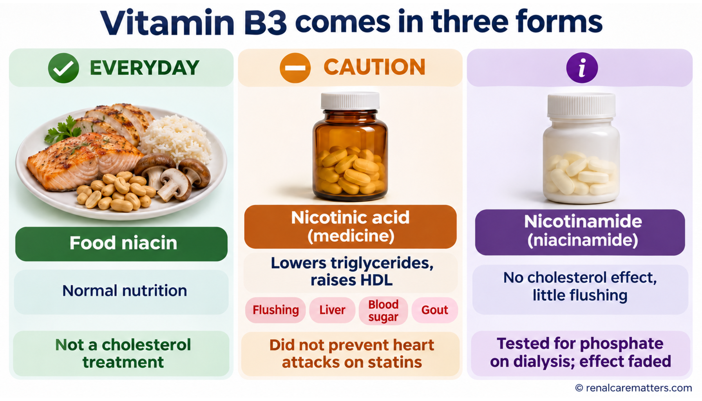
Food niacin, high-dose nicotinic acid, and nicotinamide share a name but act differently. Only nicotinic acid changes cholesterol, and it causes flushing.Magkapangalan ang niacin sa pagkain, mataas na dosis na nicotinic acid, at nicotinamide, pero magkaiba ang gawa. Ang nicotinic acid lang ang nagbabago sa cholesterol, at nagdudulot ito ng pamumula ng balat.Magkapareha og ngalan ang niacin sa pagkaon, taas nga dosis nga nicotinic acid, ug nicotinamide, apan lahi ang buhat. Ang nicotinic acid ra ang mausab sa cholesterol, ug kini makapapula sa panit.Magkalagyu ing niacin king pamangan, maragul a dosis a nicotinic acid, at nicotinamide, oneng magkaiba ing gawa. Ing nicotinic acid mu ing magbayu king cholesterol, at manyabi yang pamamula ning balat.
Flushing (warm, red, itchy skin, often within an hour of a dose) is the side effect people notice first. Liver injury, higher blood sugar, gout flares, and muscle aches matter more. If you take niacin now, do not stop or start it on your own; bring it to your next visit so your doctor can review it with you.Ang pamumula ng balat (mainit, mapula, makating balat, kadalasan sa loob ng isang oras matapos uminom) ang unang napapansin. Mas mahalaga ang pinsala sa atay, pagtaas ng asukal, pag-atake ng gout, at pananakit ng muscle. Kung umiinom ka ngayon ng niacin, huwag itong itigil o simulan nang mag-isa; dalhin ito sa susunod mong check-up para masuri ninyo ng doktor.Ang pagpula sa panit (init, pula, katol nga panit, kasagaran sulod sa usa ka oras human moinom) ang unang mamatikdan. Mas importante ang kadaot sa atay, pagtaas sa asukal, pag-atake sa gout, ug kasakit sa muscle. Kung nag-inom ka karon og niacin, ayaw kini hunonga o sugdi nga ikaw ra; dad-a kini sa sunod nimong check-up aron masusi ninyo sa doktor.Ing pamamula ning balat (mapali, mayabang, makatel a balat, kalambang king lub da ning metung a oras kaibat uminum) ing mumuna mapansinan. Mas mayalaga ing kasiraan king ate, pamagtaas ning asukal, pamag-atake ning gout, at sakit ning muscle. Nung minum ka ngeni niacin, e me pundian o pimpisan a ika mu; darame king makatuking check-up mu ban suriyan yu ning doktor.
If statins bothered you, niacin is not the usual next stepKung hindi mo nakayanan ang statin, hindi niacin ang karaniwang susunod na hakbangKung wala nimo maagwanta ang statin, dili niacin ang naandang sunod nga lakangNung e me kayanan ing statin, e niacin ing karaniwang makatuking pamaglakad
Muscle aches on a statin are common and often have other causes. Many people can take a different statin, a lower dose, or a dose on alternate days. When a statin truly is not possible, doctors usually reach for medicines with proof that they prevent heart attacks and strokes, such as ezetimibe, bempedoic acid, or injectable PCSK9 (proprotein convertase subtilisin/kexin type 9) blockers, depending on your kidney function, other medicines, cost, and availability. In people with chronic kidney disease (CKD), keeping LDL (low-density lipoprotein, the "bad" cholesterol) down remains one of the best ways to protect the heart.Karaniwan ang pananakit ng muscle habang nag-i-statin at madalas ay may ibang sanhi. Marami ang puwedeng uminom ng ibang statin, mas mababang dosis, o dosis tuwing ikalawang araw. Kapag talagang hindi puwede ang statin, kadalasang pinipili ng doktor ang mga gamot na may patunay na nakakaiwas sa atake sa puso at stroke, gaya ng ezetimibe, bempedoic acid, o injectable na PCSK9 (proprotein convertase subtilisin/kexin type 9) blocker, depende sa kidney function mo, ibang gamot, gastos, at kung mayroon nito. Sa may chronic kidney disease (CKD), ang pagpapababa ng LDL (low-density lipoprotein, ang "masamang" cholesterol) ay isa pa rin sa pinakamahusay na paraan para protektahan ang puso.Kasagaran ang kasakit sa muscle samtang nag-statin ug kasagaran adunay laing hinungdan. Daghan ang makainom og laing statin, mas ubos nga dosis, o dosis matag ikaduhang adlaw. Kung dili gyud mahimo ang statin, kasagaran pilion sa doktor ang mga tambal nga adunay pamatuod nga makapugong sa atake sa kasingkasing ug stroke, sama sa ezetimibe, bempedoic acid, o injectable nga PCSK9 (proprotein convertase subtilisin/kexin type 9) blocker, depende sa imong kidney function, ubang tambal, gasto, ug kung anaa kini. Sa adunay chronic kidney disease (CKD), ang pagpaubos sa LDL (low-density lipoprotein, ang "daotang" cholesterol) usa gihapon sa labing maayong paagi aron mapanalipdan ang kasingkasing.Karaniwan ing sakit ning muscle kabang mag-statin at kalambang atin aliwang sangkan. Dakal ing malyaring uminum aliwang statin, mas mababang dosis, o dosis balang kaduang aldo. Nung talagang e malyari ing statin, kalambang pilinan dareng doktor ing gamut a atin patunay a makapigil king atake king pusu at stroke, antimo ing ezetimibe, bempedoic acid, o injectable a PCSK9 (proprotein convertase subtilisin/kexin type 9) blocker, depende king kidney function mu, aliwang gamut, gastus, at nung atin na. Kareng atin chronic kidney disease (CKD), ing pamamababa king LDL (low-density lipoprotein, ing "marok" a cholesterol) metung ya pa murin kareng pekamasanting a paralan ban protektan ing pusu.
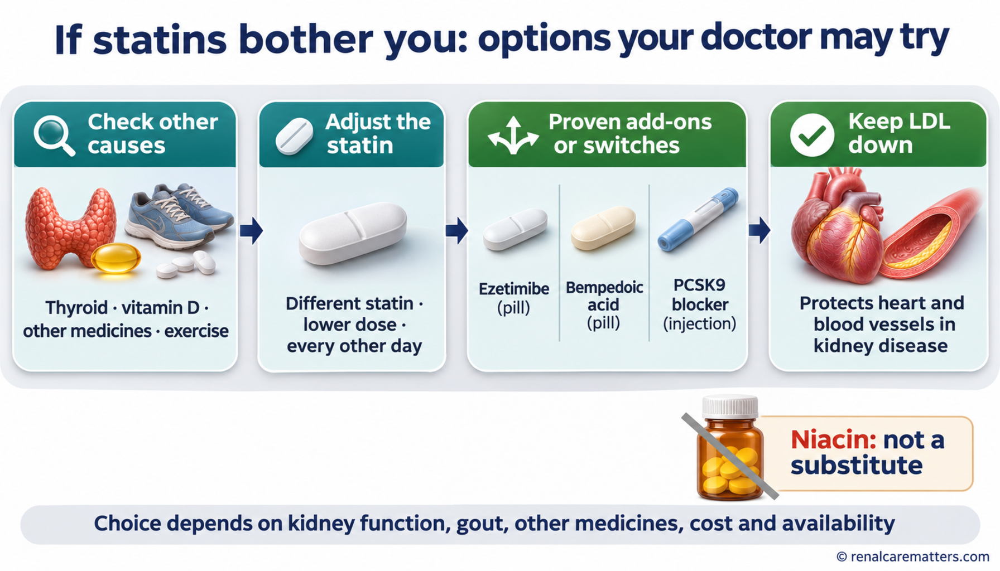
If statins bother you, your doctor has other proven options. Niacin is not a substitute.Kung hindi mo nakayanan ang statin, may iba pang napatunayang opsyon ang doktor mo. Hindi pamalit ang niacin.Kung wala nimo maagwanta ang statin, aduna pay laing napamatud-ang kapilian ang imong doktor. Dili puli ang niacin.Nung e me kayanan ing statin, atin pang aliwang apatunayan a pamipilian ing doktor mu. E ya kapalit ing niacin.
- LDL
- Low-density lipoprotein ("bad" cholesterol)
- PCSK9
- Proprotein convertase subtilisin/kexin type 9
Be careful with "natural" cholesterol productsMag-ingat sa mga "natural" na produkto para sa cholesterolPag-amping sa mga "natural" nga produkto para sa cholesterolMag-ingat kareng "natural" a produktu para king cholesterol
Over-the-counter niacin, red yeast rice, and other supplements are not recommended to lower cholesterol: their strength varies, their benefit is unproven, and some can harm the liver, muscles, or kidneys. Coenzyme Q10 has not been shown to prevent statin muscle aches.Hindi inirerekomenda ang over-the-counter na niacin, red yeast rice, at iba pang supplement para pababain ang cholesterol: iba-iba ang lakas, hindi napatunayan ang benepisyo, at may ilang puwedeng makapinsala sa atay, muscle, o bato. Hindi napatunayang nakakaiwas ang Coenzyme Q10 sa pananakit ng muscle dahil sa statin.Dili girekomendar ang over-the-counter nga niacin, red yeast rice, ug ubang supplement aron paubsan ang cholesterol: lahi-lahi ang kusog, wala mapamatud-i ang kaayohan, ug ang uban makadaot sa atay, muscle, o kidney. Wala mapamatud-i nga makapugong ang Coenzyme Q10 sa kasakit sa muscle tungod sa statin.E rerekomendan ing over-the-counter a niacin, red yeast rice, at aliwang supplement ban pababan ing cholesterol: iba-iba ing sikan, e apatunayan ing pakinabang, at atin malyaring manyira king ate, muscle, o batu. E apatunayan a makapigil ing Coenzyme Q10 king sakit ning muscle uli ning statin.
What to bring to a medicine or nutrition reviewAno ang dadalhin sa pagsusuri ng gamot o nutrisyonUnsay dad-on sa pagsusi sa tambal o nutrisyonNanu ing darang king pamagsuri king gamut o nutrisyun
- The bottle, or a clear photo of the label, for every vitamin, niacin, or supplement you take.Ang bote, o malinaw na litrato ng label, ng bawat bitamina, niacin, o supplement na iniinom mo.Ang botelya, o klarong litrato sa label, sa matag bitamina, niacin, o supplement nga imong giinom.Ing bote, o malinis a litratu ning label, ning balang bitamina, niacin, o supplement a iinuman mu.
- A list of statins you have tried, the doses, when symptoms began, and what happened when you stopped or restarted.Listahan ng mga statin na nasubukan mo, ang dosis, kailan nagsimula ang sintomas, at ano ang nangyari nang itigil o ibalik.Lista sa mga statin nga imong nasulayan, ang dosis, kanus-a nagsugod ang sintomas, ug unsay nahitabo pagpahunong o pagbalik.Listahan dareng statin a asubukan mu, ing dosis, kapilan mimpisa ing sintomas, at nanu ing milyari kanita mipundi o mibalik.
- How many days you have been vomiting or eating very little, and how much weight you have lost.Ilang araw ka nang nagsusuka o halos hindi kumakain, at gaano karami ang ibinawas ng timbang mo.Pila ka adlaw ka nang nagsuka o halos dili mokaon, ug pila ang nawala sa imong timbang.Pilan nang aldo kang mumulua o ali mangan, at pilan ing mibawas king timbang mu.
- Any weight-loss injection or recent surgery, with dates.Anumang weight-loss injection o bagong operasyon, kasama ang petsa.Bisan unsang weight-loss injection o bag-ong operasyon, uban ang petsa.Nanumang weight-loss injection o bayung opera, kayabe ing petsa.
- Your dialysis schedule, so blood tests can be read in the right context.Ang iskedyul ng dialysis mo, para mabasa nang tama ang blood test.Ang imong iskedyul sa dialysis, aron mabasa sa husto ang blood test.Ing iskedyul ning dialysis mu, ban mabasa a tama ing blood test.
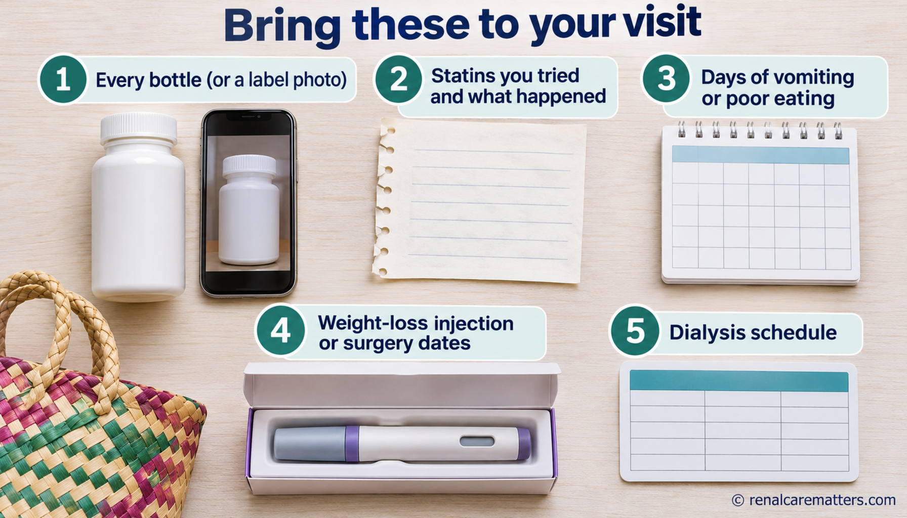
Bring the bottles or label photos, your statin history, and your dialysis schedule. These details change what your doctor recommends.Dalhin ang mga bote o litrato ng label, ang kasaysayan mo sa statin, at ang iskedyul ng dialysis. Binabago ng mga detalyeng ito ang irerekomenda ng doktor.Dad-a ang mga botelya o litrato sa label, ang imong kasaysayan sa statin, ug ang iskedyul sa dialysis. Kini nga mga detalye makausab sa irekomendar sa doktor.Darame ing bote o litratu ning label, ing kasaysayan mu king statin, at ing iskedyul ning dialysis. Babayuan dareni a detalye ing irekomenda ning doktor.
Common questionsMga karaniwang tanongKasagarang pangutanaReng karaniwan a kutang
Recognize thiamine deficiency early; retire niacin as a statin add-on
This guide pairs two water-soluble B vitamins that pose opposite problems in kidney care. Thiamine (vitamin B1) deficiency is a recognition problem: it is uncommon, but it is treatable, it can present first with abdominal pain, vomiting, anorexia and unexplained hyperlactatemia (gastrointestinal beriberi), and patients receiving dialysis carry several risk factors at once. Pharmacologic niacin (nicotinic acid) is a de-implementation problem: it improves high-density lipoprotein cholesterol (HDL-C) and triglycerides (TG), yet two large randomized trials found no reduction in cardiovascular events when it was added to statin therapy, with excess serious harm in the larger one. The 2026 American College of Cardiology/American Heart Association (ACC/AHA) multisociety dyslipidemia guideline lists niacin only as a last-line triglyceride-lowering option and directs statin-intolerant patients toward agents with outcome evidence.
Think of thiamine when intake has failed
Vomiting, anorexia, weight loss, bariatric surgery, alcohol, interrupted nutrition support, dialysis, or incretin-related intolerance, plus abdominal pain or a lactate that is not explained.
Draw blood, then treat without waiting
Whole-blood thiamine diphosphate before the first dose if it causes no delay; parenteral thiamine by protocol when Wernicke encephalopathy, cardiac beriberi or poor absorption is possible.
Reconcile niacin; reroute lipid care
Do not add niacin to a statin for prevention. Use a maximally tolerated statin, then ezetimibe, bempedoic acid or PCSK9-directed therapy as indicated and available.
Why thiamine deficiency raises lactate and stalls the gut
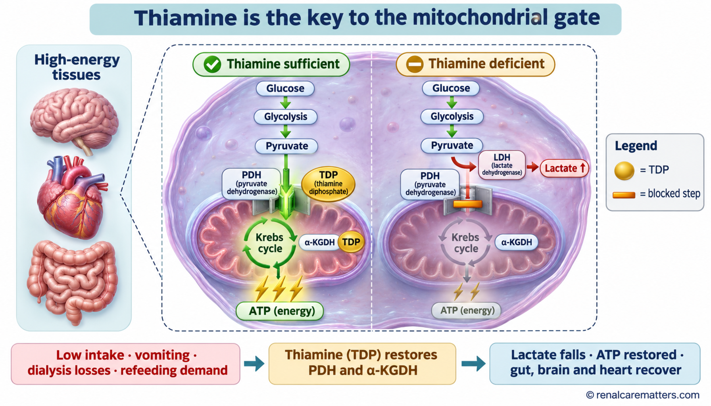
Thiamine diphosphate is the cofactor that lets pyruvate enter the mitochondrion. Without it, pyruvate backs up into lactate and adenosine triphosphate (ATP) output falls, most in energy-hungry tissue such as brain, heart and gut muscle and nerve.
- ATP
- Adenosine triphosphate
- TDP
- Thiamine diphosphate
- PDH
- Pyruvate dehydrogenase
- α-KGDH
- α-Ketoglutarate dehydrogenase
- LDH
- Lactate dehydrogenase
- NADH
- Reduced nicotinamide adenine dinucleotide
Normal function. Ingested thiamine is absorbed in the proximal small bowel and phosphorylated intracellularly to thiamine diphosphate (TDP), the active coenzyme for pyruvate dehydrogenase (PDH), α-ketoglutarate dehydrogenase (α-KGDH), branched-chain α-keto acid dehydrogenase and transketolase. PDH is the gate between glycolysis and the tricarboxylic acid cycle; α-KGDH sits inside the cycle; transketolase links the pentose phosphate pathway to glycolysis and supplies reduced nicotinamide adenine dinucleotide phosphate for antioxidant defense (established physiology). Body stores are small and turnover is brisk, so stores can be depleted within weeks of poor intake.
What deficiency breaks. When TDP falls, PDH flux falls first in practice. Pyruvate accumulates and is reduced to lactate in the cytosol, regenerating NAD+ (nicotinamide adenine dinucleotide) so glycolysis can continue at low ATP yield. The result is a type B hyperlactatemia that occurs without hypoperfusion, and that a carbohydrate load worsens because it drives more substrate into a blocked gate. Tissues with high, continuous oxidative demand fail first: the brain (Wernicke encephalopathy), the myocardium and vascular tone (high-output cardiac beriberi), and peripheral nerves. The mechanism for the gastrointestinal phenotype is less well defined; energy failure of the enteric nervous system and smooth muscle, with dysmotility, is the leading explanation (mechanistic hypothesis).
Why kidney patients are exposed. Thiamine is small and water-soluble, so it crosses dialysis membranes; reduced appetite, dietary restriction, gastroparesis, intercurrent illness and loop diuretics (urinary loss before kidney failure) add to the deficit. A 2025 single-center hemodialysis study measured whole-blood thiamine by high-performance liquid chromatography and found deficiency in 11.5% of 113 patients, with lower levels associated with lower hemoglobin. This was a cross-sectional association, not a measure of incidence or causation. The 2026 review of thiamine in hospitalized patients also notes that sepsis, loop diuretics and malabsorption shift the risk upward.
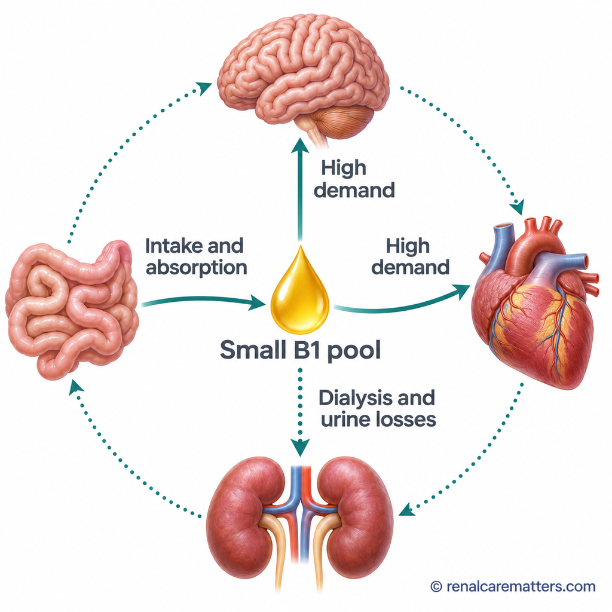
One small thiamine pool: the gut fills it, urine and dialysis drain it, and the brain, heart and gut wall draw on it. When intake fails and losses continue, the tissues with the highest demand fail first.
- B1
- Vitamin B1 (thiamine)
Gastrointestinal beriberi: the case, the history, and the 2026 signals
Opening case (2026) Case / mechanistic
A 67-year-old man receiving intermittent hemodialysis had chronic abdominal pain, nausea, vomiting and anorexia refractory to conventional therapy. Lactate was elevated and plasma thiamine was low before supplementation. Symptoms and lactate resolved rapidly after intravenous thiamine. One case teaches recognition and reassessment; it cannot establish incidence, a dialysis-specific cause, or a dose.
Take the nutrition history as a risk inventory. Ask for the duration and severity of vomiting and reduced intake, weight lost, prior bariatric or other gastrointestinal surgery, malabsorption, alcohol use, interrupted enteral or parenteral nutrition, dialysis modality and appetite, loop diuretic use, and the timing of any glucagon-like peptide-1 receptor agonist (GLP-1 RA) or dual incretin start or dose escalation. Then connect the risk to the physiology: a lactate that is high without shock, sepsis or metformin, in someone who has not been eating, is the bedside clue that makes the diagnosis worth testing for and treating.
| Source | What it found | How to use it |
|---|---|---|
| Hemodialysis case, 2026 Case / mechanistic | Compatible symptoms, elevated lactate, low plasma thiamine, rapid response to IV thiamine in one patient | Recognition template; no incidence or dosing inference |
| Systematic review of Wernicke encephalopathy in kidney disease, 2024 Observational | 46 published cases with acute or chronic kidney disease; prodromal loss of appetite, vomiting, weight loss, abdominal pain and diarrhea; recovery often followed high-dose parenteral thiamine, while Korsakoff syndrome appeared in those given low doses | Treat gastrointestinal prodrome as a window before neurologic injury; case-level evidence subject to reporting bias |
| GLP-1 RA pharmacovigilance and literature review, 2026 Observational | 15 cases of Wernicke encephalopathy (13 in the Food and Drug Administration Adverse Event Reporting System, FAERS); semaglutide 8 and tirzepatide 6; gastrointestinal symptoms or nutritional compromise in 13 of 15; disproportional reporting (reporting odds ratio 2.35, 95% CI 1.38–4.01); long-term neurologic sequelae in 7 of 11 with follow-up | Ask about persistent vomiting and intake on incretin therapy; signal only, cannot establish incidence or causation |
| Pediatric report, 2026 Case / mechanistic | Eight-year-old with abdominal pain, food refusal, weight loss and rising lactate on thiamine-free parenteral nutrition; resolved within 24 hours of IV thiamine | Teaching sidebar only; adult pathways here are not for pediatric use |
| Hemodialysis status study, 2025 Observational | Whole-blood thiamine deficiency in 11.5% of 113 patients; association with hemoglobin | Deficiency is not rare in dialysis; prevalence will vary by population and assay |
CI, confidence interval. Evidence labels reflect study design; case reports and spontaneous reports describe what can happen, not how often.
Escalate first, then work the differential in parallel
Escalate immediately for hemodynamic instability, peritonism, severe or rising lactate, altered mental status, ataxia, nystagmus or ophthalmoplegia, or new heart failure or shock. Possible Wernicke encephalopathy or cardiac beriberi warrants protocol-based parenteral thiamine without delay, given before or with glucose where emergency hypoglycemia treatment allows. Treating hypoglycemia always comes first; do not withhold glucose from a hypoglycemic patient while thiamine is prepared. The European Federation of Neurological Societies (EFNS) guideline advises measuring total blood thiamine immediately before administration, using magnetic resonance imaging (MRI) to support the diagnosis, and suspecting Wernicke encephalopathy in every condition that can cause thiamine deficiency, not only alcohol use.
| Do not miss | Why it matters here | First moves |
|---|---|---|
| Sepsis and hypoperfusion | The common cause of type A hyperlactatemia; thiamine deficiency can coexist | Cultures, perfusion assessment, early antibiotics as indicated |
| Mesenteric ischemia | Pain out of proportion and a high lactate in vascular patients, including on dialysis with intradialytic hypotension | Urgent computed tomography angiography and surgical review |
| Obstruction, pancreatitis, perforation | Vomiting and pain overlap fully | Imaging, lipase, surgical review |
| Medication and toxin causes | Metformin accumulation in low kidney function, alcohols, linezolid, nucleoside analogs | Medication review; toxin screen and osmolar gap when indicated |
| Peritonitis in peritoneal dialysis | Cloudy effluent and abdominal pain | Effluent cell count, Gram stain and culture |
| Wernicke encephalopathy or cardiac beriberi | Neurologic injury can become permanent; high-output failure can be fatal | Parenteral thiamine by protocol now; neurology or cardiology review |
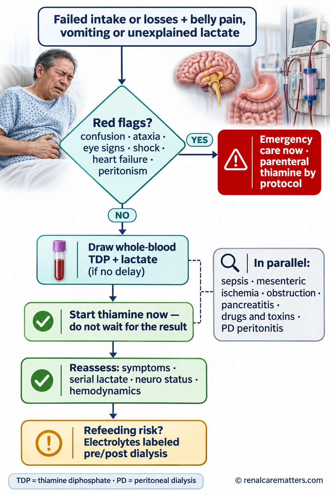
A recognition pathway: screen for red flags first, draw blood before the first dose when that causes no delay, start thiamine without waiting for the result, and keep looking for other causes.
- TDP
- Thiamine diphosphate
- IV
- Intravenous
- WE
- Wernicke encephalopathy
- PD
- Peritoneal dialysis
Test before the first dose, treat on suspicion, and reassess deliberately
Testing. Whole-blood (erythrocyte) TDP reflects tissue status better than plasma thiamine, which falls quickly with recent intake and rises within hours of any dose. Collect the sample before replacement when it is immediately available, but never delay treatment for it: send-out turnaround is often days, and a normal result after supplementation is uninterpretable. Pair it with serial lactate, glucose, phosphate, magnesium and potassium, and document neurologic and hemodynamic status at baseline.
Treatment on suspicion. When suspicion is high, start empiric thiamine. Use the parenteral route for severe illness, unreliable absorption (vomiting, short bowel, recent bariatric surgery), or possible Wernicke encephalopathy, then transition to oral therapy when intake and absorption are reliable. Thiamine is dialyzable, so time doses after hemodialysis on dialysis days when practical. Record the time of each dose and of each reassessment; improvement in pain, nausea and lactate after thiamine supports the diagnosis but must be read beside concurrent fluids, antiemetics, nutrition and treatment of other causes.
| Indication | What published sources describe | Evidence |
|---|---|---|
| Suspected or manifest Wernicke encephalopathy | EFNS: 200 mg three times daily, preferably IV, given before any carbohydrate (Level C). Kidney-disease case review: 500 mg IV three times daily often preceded full recovery | Guideline / consensus Observational |
| Refeeding-syndrome prophylaxis (adults) | American Society for Parenteral and Enteral Nutrition (ASPEN): 100 mg before feeding or dextrose-containing IV fluids, then 100 mg daily for 5–7 days or longer in selected high-risk patients. Australasian Society of Parenteral and Enteral Nutrition (AuSPEN): thiamine before nutrition starts and daily for the first 7–10 days (Level B); doses in the studies reviewed ranged from 100 to 300 mg, and no study isolated thiamine's preventive effect | Guideline / consensus |
| After bariatric surgery | EFNS: follow thiamine status for at least 6 months (Level B); parenteral supplementation (good practice point) | Guideline / consensus |
| Hospitalized patients generally | 2026 clinical review: dose, route and duration vary by indication and guideline; framework by indication rather than one universal dose | Guideline / consensus |
Use your institutional protocol
The table reports what each source states; it is not a substitute for a local order set. Pharmacy and the responsible clinical service should confirm indication, route, frequency, duration and oral transition, including timing around dialysis. Thiamine has a wide safety margin, and the EFNS guideline rates its overall safety as very good (Level B); rare anaphylaxis with IV use is the main caution.
Refeeding: separate prophylaxis from treatment, and read electrolytes against the dialysis clock
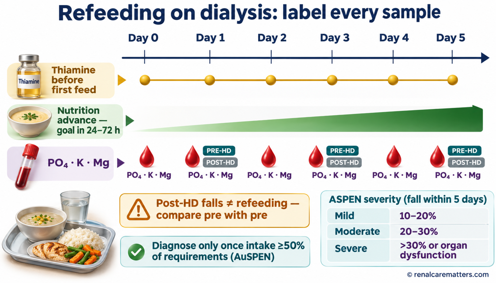
Refeeding care on a timeline: thiamine before feeding, a planned nutrition advance, and daily electrolyte checks, each labeled as drawn before or after dialysis so a post-dialysis fall is not mistaken for refeeding.
- HD
- Hemodialysis
- PO₄
- Phosphate
- K
- Potassium
- Mg
- Magnesium
Mechanism. After prolonged starvation, carbohydrate reintroduction raises insulin, which drives phosphate, potassium and magnesium into cells and accelerates thiamine use as glycolytic flux resumes. Intracellular phosphate is consumed in phosphorylated intermediates and ATP synthesis. In a patient whose stores are already low, the serum concentration falls and thiamine-dependent enzymes fail at the moment demand rises (established physiology).
Definitions. The ASPEN consensus grades refeeding syndrome by the fall in serum phosphorus, potassium and/or magnesium within 5 days of reintroducing calories: 10%–20% (mild), 20%–30% (moderate), and more than 30% or organ dysfunction from these falls or from thiamine deficiency (severe). The 2025 AuSPEN consensus adds that actual refeeding syndrome is rare, should be diagnosed only once intake reaches at least 50% of estimated requirements, that thiamine, a multivitamin and regular electrolyte monitoring should be given to everyone at risk, and that there is no evidence that at-risk patients need a slower enteral start, with goal rates reached within 24–72 hours.
The dialysis twist. Hemodialysis removes phosphate and potassium, and a sample drawn after a session can show a large fall that has nothing to do with refeeding. Conversely, a patient on dialysis may start with high predialysis phosphate and potassium, masking depletion of intracellular stores. Compare like with like: predialysis with predialysis, and annotate every value with its timing relative to dialysis and to the nutrition restart. Treat emergency hypoglycemia immediately. Agree replacement thresholds and dialysate prescription with the renal and nutrition teams, because replacing phosphate or potassium aggressively in kidney failure carries its own risk. AuSPEN makes the same point: in kidney failure, preventive electrolyte dosing is hard to calculate from already-high levels and should involve the treating specialists.
Start with reconciliation: food niacin, nicotinic acid, and nicotinamide are different exposures
| Exposure | Typical amount | Physiology | Clinical relevance |
|---|---|---|---|
| Dietary vitamin B3 (niacin equivalents from food, including tryptophan conversion) | Milligrams per day | Precursor of NAD+ and NADP+, the redox cofactors of energy metabolism | Deficiency (pellagra) is rare; food intake is not a lipid therapy |
| Pharmacologic nicotinic acid (immediate-, sustained- or extended-release) | Gram doses (500–2,000 mg/day) | Activates hydroxycarboxylic acid receptor 2 (HCA2, also called GPR109A) on adipocytes, reducing lipolysis and free fatty acid flux to the liver; reduces hepatic TG esterification; raises HDL-C | Lowers TG and modestly lowers low-density lipoprotein cholesterol (LDL-C); prostaglandin D2-mediated flushing, hepatotoxicity (most with sustained-release), insulin resistance, hyperuricemia and gout, myopathy with statins |
| Nicotinamide (niacinamide) | Hundreds of milligrams to grams | No HCA2 activity, so no lipid effect and little flushing; reduces intestinal sodium-dependent phosphate transport | Investigated as a phosphate-lowering add-on in dialysis (NOPHOS); not a lipid drug |
Record the indication, product name, dose, release formulation and co-therapies. Patients often call any of these "vitamin B3," and over-the-counter products may be labeled by either name. When current pharmacologic niacin use is found, review flushing, liver enzymes, glycemic control, urate and gout, and muscle symptoms, then decide with the patient whether there is any remaining indication.
The statin add-on question: lipids moved, events did not
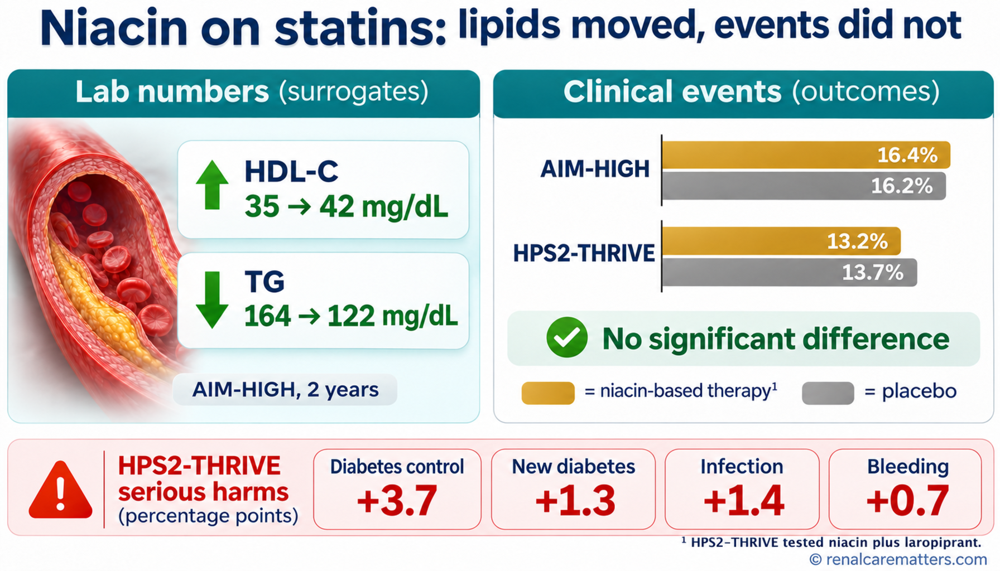
Niacin improved HDL cholesterol and triglycerides in both trials, but major vascular events were nearly identical to placebo, and serious harms rose in the larger trial.
- HDL-C
- High-density lipoprotein cholesterol
- TG
- Triglycerides
The hypothesis. Low HDL-C and high TG mark residual risk on statins, so raising one and lowering the other should prevent events. Two trials tested this on modern statin backgrounds.
AIM-HIGH (2011) RCT
- Population
- 3,414 adults with established atherosclerotic cardiovascular disease (ASCVD), low HDL-C and elevated TG, on simvastatin ± ezetimibe to an LDL-C of 40–80 mg/dL
- Intervention
- Extended-release niacin 1,500–2,000 mg/day vs placebo
- Lipids
- HDL-C 35 → 42 mg/dL; TG 164 → 122 mg/dL at 2 years
- Primary
- 16.4% vs 16.2%; hazard ratio (HR) 1.02 (95% CI 0.87–1.21); stopped early for futility at a mean 3 years
HPS2-THRIVE (2014) RCT
- Population
- 25,673 adults with vascular disease after a run-in that standardized statin therapy and excluded niacin-intolerant participants
- Intervention
- Extended-release niacin 2 g plus laropiprant 40 mg vs placebo; median 3.9 years
- Lipids
- LDL-C 10 mg/dL lower and HDL-C 6 mg/dL higher on average
- Primary
- 13.2% vs 13.7%; rate ratio 0.96 (0.90–1.03)
- Serious harms
- Diabetes control disturbance +3.7 points (number needed to harm, NNH, about 27); new diabetes +1.3 (NNH about 77); infection +1.4 (about 71); gastrointestinal +1.0 (100); musculoskeletal +0.7; bleeding +0.7 (about 143); skin +0.3
Interpretation. Both trials changed the surrogate in the expected direction without changing the outcome, the textbook pattern that separates biomarker improvement from clinical benefit. HPS2-THRIVE tested niacin with laropiprant, a prostaglandin D2 receptor antagonist added to blunt flushing, so its harms belong to that combination; AIM-HIGH, without laropiprant, also showed no benefit. Critics note that both enrolled patients with well-controlled LDL-C and that older trials without statins suggested benefit; that history explains why niacin was plausible, but it does not rescue it as an add-on to contemporary statin therapy. The 2026 ACC/AHA guideline's drug table states that cardiovascular outcome trials show no reduction in events when niacin is added to statins in secondary prevention, positions it as a last-line agent for severe hypertriglyceridemia because of intolerable side effects, and lists increased insulin resistance, frequent flushing and significant hepatotoxicity. The same guideline recommends against dietary supplements to lower LDL-C or TG and rates routine coenzyme Q10 for statin-associated muscle symptoms as 3: No Benefit (B-R).
CKD signal from AIM-HIGH Post hoc RCT subgroup
A post hoc analysis of 505 participants with stage 3 chronic kidney disease (CKD) found no cardiovascular benefit (primary endpoint 23.6% vs 23.9%; HR 1.02, 0.71–1.45) and no difference in estimated glomerular filtration rate (eGFR) change, but higher all-cause mortality on niacin (15.4% vs 8.9%; HR 1.73, 1.03–2.89), mostly from non-cardiovascular causes, with more discontinuation (32.7% vs 22.7%). Treat the mortality finding as an exploratory subgroup signal, not proof of harm; it reinforces, rather than creates, the case against niacin in CKD.
Absolute effects explorer: what the trials mean per 1,000 people
Relative effects hide the size of a benefit. This tool converts each trial's published arm proportions into events per 1,000 people over the trial's own follow-up. It uses crude event proportions from the primary publications, shows the published effect estimate separately, and should not be used to compare trials with different endpoints, populations or durations, or to predict an individual's risk.
| Arm | Events per 1,000 | Source counts |
|---|
Number needed to treat (NNT) = 1 ÷ absolute risk reduction, shown only where the published effect excludes no difference. CLEAR Outcomes and SHARP are included as the outcome-proven comparators for statin intolerance and CKD; they test different drugs and populations from the niacin trials.
Statin intolerance: confirm it, then choose an outcome-proven alternative
Ask about the timing of symptoms relative to starting or increasing the statin, their severity and distribution, creatine kinase (CK) if measured, interacting drugs, hypothyroidism and vitamin D status, prior agents and doses, and the response to withdrawal and rechallenge where appropriate. Many patients tolerate a different statin, a lower dose, or alternate-day dosing. Severe hypertriglyceridemia belongs on a separate pancreatitis-prevention pathway.
CLEAR Outcomes (2023) RCT
- Population
- 13,970 statin-intolerant patients with, or at high risk of, cardiovascular disease
- Intervention
- Bempedoic acid 180 mg/day vs placebo; median 40.6 months
- LDL-C
- 29.2 mg/dL greater reduction at 6 months (21.1 percentage points)
- Primary
- 11.7% vs 13.3% four-component major adverse cardiovascular events (MACE); HR 0.87 (0.79–0.96); about 16 fewer events per 1,000 (NNT about 64)
- Harms
- Gout 3.1% vs 2.1%; cholelithiasis 2.2% vs 1.2%; small rises in creatinine, uric acid and hepatic enzymes
SHARP (2011) RCT
- Population
- 9,270 patients with CKD (3,023 on dialysis) and no prior myocardial infarction or coronary revascularization
- Intervention
- Simvastatin 20 mg plus ezetimibe 10 mg vs placebo; median 4.9 years
- Primary
- Major atherosclerotic events 11.3% vs 13.4%; rate ratio (RR) 0.83 (0.74–0.94); about 21 fewer per 1,000 (NNT about 48)
- Safety
- Excess myopathy 2 per 10,000 patient-years; no excess hepatitis, gallstones or cancer
Bempedoic acid raises uric acid and creatinine slightly, a relevant trade-off in CKD and gout; verify renal eligibility, interactions and local availability before choosing it. Ezetimibe is the outcome-tested partner for a statin in CKD (SHARP). PCSK9 (proprotein convertase subtilisin/kexin type 9)-directed therapy is an option where cost and access allow. The 2026 ACC/AHA guideline names ezetimibe, bempedoic acid and PCSK9 monoclonal antibodies as the main nonstatin options; niacin is not among them.
Who with CKD should receive LDL-lowering therapy: two guideline frames
Two guideline families frame eligibility. Kidney Disease: Improving Global Outcomes (KDIGO) bases statin use in CKD on age, eGFR and dialysis or transplant status and does not use LDL-C targets; the 2026 ACC/AHA guideline uses risk categories, Predicting Risk of cardiovascular disease EVENTs (PREVENT) estimates and restored LDL-C goals. They agree on the core: most adults with non-dialysis CKD should be on LDL-lowering therapy.
| Group | KDIGO | 2026 ACC/AHA |
|---|---|---|
| Age ≥50 years, eGFR <60 mL/min/1.73 m², not on chronic dialysis, no transplant | Statin or statin–ezetimibe (1A in both the KDIGO 2013 lipid guideline and KDIGO 2024) | LDL-lowering therapy for primary prevention in adults 40–75 years with CKD stage 3 or 4, regardless of LDL-C; Predicting Risk of cardiovascular disease EVENTs (PREVENT) equations, which include eGFR, for others aged 30–79 |
| Age 18–49 years with CKD | Statin if known coronary disease, diabetes, prior ischemic stroke or high estimated 10-year risk (2A) | |
| Chronic dialysis | Do not initiate a statin or statin–ezetimibe in most (2A); continue if already taking at dialysis start (2C) | No dialysis-specific initiation recommendation in the guideline's published summaries; individualize (SHARP's dialysis subgroup was underpowered on its own) |
| Kidney transplant | Statin suggested (2B) | Follow transplant-specific guidance and interactions with calcineurin inhibitors |
| Established ASCVD | Secondary prevention pathway with intensity and LDL-C goals per guideline; CKD raises absolute risk | |
KDIGO grades use its own system (1 = recommend, 2 = suggest; A–D = certainty) and are not interchangeable with ACC/AHA class and level. The PREVENT equations were derived and calibrated in US cohorts; label results accordingly when used for Filipino patients. Selected recommendations only; read the full guidelines for complete criteria.
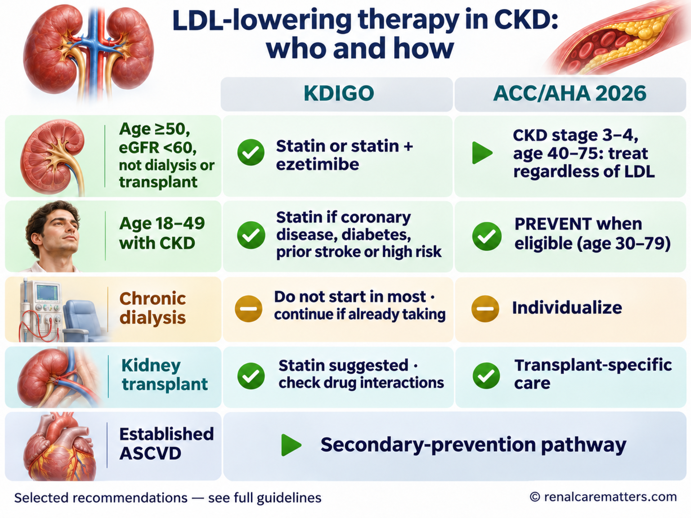
Two guideline frames on one card. Most adults with non-dialysis CKD qualify for LDL-lowering therapy; on chronic dialysis, the question is whether to start, not whether to continue. The ACC/AHA dialysis cell is this guide's reading, as the published summaries carry no dialysis-specific recommendation.
- ASCVD
- Atherosclerotic cardiovascular disease
- CKD
- Chronic kidney disease
- eGFR
- Estimated glomerular filtration rate
- KDIGO
- Kidney Disease: Improving Global Outcomes
- ACC/AHA
- American College of Cardiology/American Heart Association
- LDL
- Low-density lipoprotein
- PREVENT
- Predicting Risk of cardiovascular disease EVENTs
CKD-specific niacin data. A 2026 target-trial emulation in 68,073 US veterans with incident CKD compared 2,005 niacin initiators with 62,866 statin initiators. Major adverse kidney events (MAKE: a sustained ≥57% eGFR decline, sustained eGFR <15 mL/min/1.73 m², incident end-stage kidney disease or death) did not differ (HR 0.96, 0.89–1.04; median 3.69 years), and eGFR slope did not differ significantly. Fibrate initiators had a slightly slower 10-year eGFR decline (0.26 mL/min/1.73 m² per year). Observational This shows no detectable kidney or death advantage for niacin over statins; it cannot establish cardiovascular equivalence, and confounding by indication is likely.
Nicotinamide for phosphate: an early effect that did not last
Mechanism. Nicotinamide reduces sodium-dependent phosphate transport in the intestine, a target distinct from the binders that complex dietary phosphate in the gut lumen (mechanistic rationale with human pharmacodynamic support).
NOPHOS (52-week results, 2023) RCT
- Population
- Maintenance hemodialysis with hyperphosphatemia; intention-to-treat 539 vs 183
- Intervention
- Modified-release nicotinamide 250–1,500 mg/day vs placebo, added to phosphate binders
- Result
- Serum phosphate −0.39 mg/dL at week 24 (−0.66 to −0.13); −0.08 mg/dL at week 52 (−0.36 to 0.20). Effect smaller with high baseline intact parathyroid hormone (PTH); larger in adherent patients
- Safety
- More thrombocytopenia, pruritus, anemia and diarrhea; herpes zoster only in the nicotinamide arm
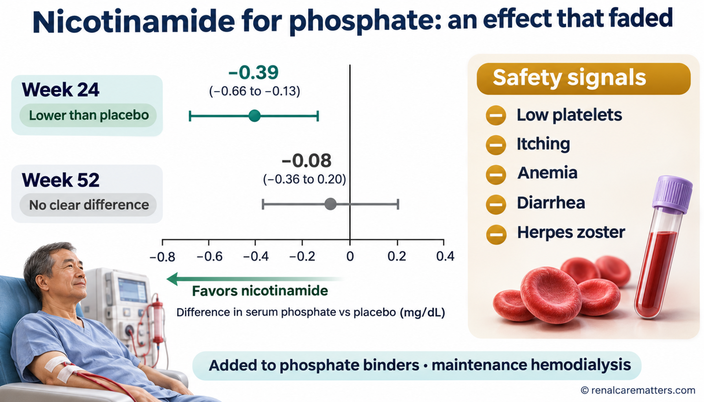
The phosphate difference versus placebo was clear at 24 weeks but its confidence interval crossed zero by 52 weeks, while new safety signals appeared.
Phosphate is a surrogate; no trial has shown that nicotinamide improves patient outcomes. With waning efficacy, new safety signals and pill burden, it is not a routine option in CKD–mineral and bone disorder (CKD-MBD) care.
Dietary niacin and terminal metabolites: research, not targets
Two observational lines point in apparently opposite directions, and both are hypothesis-generating. In a metabolomics study, circulating N1-methyl-4-pyridone-3-carboxamide (4PY), a terminal metabolite of excess niacin, was associated with 3-year major adverse cardiovascular events in two validation cohorts (highest vs lowest quartile, adjusted HR 1.89, 1.26–2.84 and 1.99, 1.26–3.14; attenuated but still present after adding eGFR, HR 1.64 and 1.67), and 4PY, not its isomer N1-methyl-2-pyridone-5-carboxamide (2PY), induced vascular cell adhesion molecule 1 (VCAM-1) expression and leukocyte adhesion experimentally. Observational Case / mechanistic Separately, in National Health and Nutrition Examination Survey (NHANES) adults with CKD, the highest quartile of reported dietary niacin (>27.7 mg/day) was associated with lower prevalent cardiovascular disease (odds ratio 0.71, 0.56–0.90) and lower cardiovascular mortality (HR 0.61, 0.48–0.77) than the lowest. Observational
These are different exposures. Dietary recall measures food intake and carries healthy-eater confounding; 4PY reflects the metabolic handling of excess niacin and accumulates when kidney clearance falls, so part of its signal may track reduced kidney function, although adjustment for eGFR did not remove it. No clinical threshold, no dietary target and no change in management follows from either study. Keep food intake, circulating metabolites and gram-dose therapy distinct when counseling.
Applying this in Philippine practice
- Diet and history. A diet built on polished white rice supplies little thiamine; ask what the patient actually ate during the illness, not only what they usually eat.
- Testing access. Whole-blood thiamine diphosphate is not available in every laboratory and is often a send-out test. Draw it before treatment when you can, but let the clinical picture drive the first dose.
- Formulary check. Confirm local availability of parenteral thiamine, renal multivitamins, ezetimibe, bempedoic acid and PCSK9-directed therapy before promoting a pathway. This guide does not assert local registration or coverage status for any product.
- Weight-loss injections. Ask about semaglutide and tirzepatide obtained outside clinic channels, including online purchases, when a patient presents with persistent vomiting.
- Over-the-counter niacin and "cholesterol supplements." Ask directly and ask for the bottle; product names and doses vary.
Clinical pearls
Evidence review and what changed from the blueprint
Search. PubMed (via the PubMed interface) and guideline publishers were searched on November 16, 2026, using combinations of gastrointestinal beriberi, thiamine deficiency, hemodialysis, Wernicke encephalopathy, glucagon-like peptide-1, refeeding, nicotinic acid, nicotinamide, statin intolerance, chronic kidney disease, 2PY and 4PY. Every quantitative claim was checked against the primary abstract or full text; guideline statements were checked against the guideline or its published summary tables.
What this review added or corrected. The HPS2-THRIVE primary publication DOI is 10.1056/NEJMoa1300955. The 2026 veterans cohort defined its kidney composite with a sustained ≥57% eGFR decline. The NHANES dietary niacin study also reported lower cardiovascular mortality, now shown with its limits. The AIM-HIGH CKD mortality figures were confirmed in the full text. Dose-table entries were checked against the EFNS guideline abstract, the AuSPEN full text and published reproductions of the ASPEN thiamine table; KDIGO grades were checked against the 2013 lipid guideline summary and the KDIGO 2024 graded recommendations. New sources: a 2024 systematic review of Wernicke encephalopathy in kidney disease, a 2025 hemodialysis thiamine-status study, the EFNS Wernicke guideline, the KDIGO 2013 lipid guideline summary, SHARP, and a 2024 review of vitamin supplementation in CKD, which found no randomized evidence that any vitamin supplement improves kidney, cardiovascular or patient-centered outcomes and advises individualized water-soluble vitamin supplementation.
Evidence labels. Randomized controlled trial (RCT), post hoc analysis, observational cohort, pharmacovigilance, case report and consensus are labeled where each is used. Clinical review by nephrology, pharmacy and nutrition support is required before any local order set is built from this page.